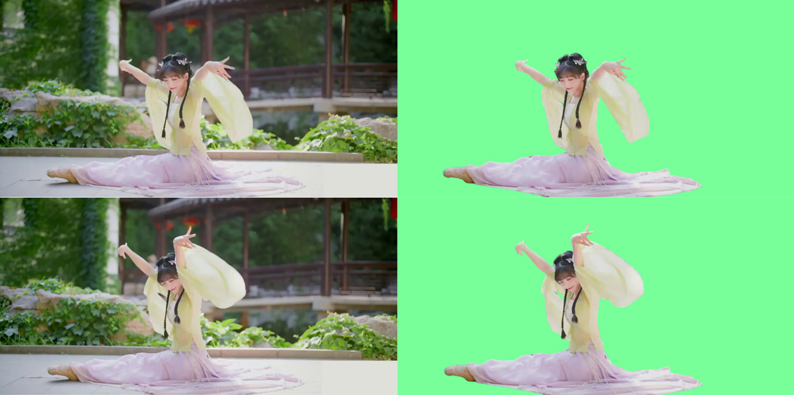
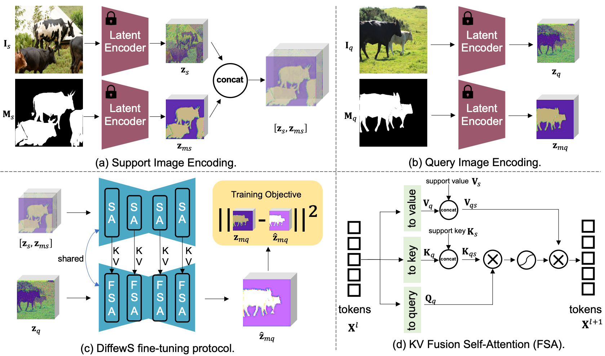

|
Unlocking the Power of Critical Factors for 3D Visual Geometry Estimation
Guangkai Xu*, Hua Geng*, Huanyi Zheng, Songyi Yin, Yanlong Sun, Hao Chen, Chunhua Shen†
CVPR, 2026Systematically analyzes key factors in 3D visual geometry estimation, including data, supervision, losses, and resolution, and proposes unified training and modeling strategies for reliable depth/normal prediction. |
|
What Matters When Repurposing Diffusion Models for General Dense Perception Tasks?
Guangkai Xu, Yongtao Ge, Mingyu Liu, Chengxiang Fan, Kangyang Xie, Zhiyue Zhao, Hao Chen, Chunhua Shen†
ICLR, 2025Repurposes pretrained text-to-image diffusion models for general dense perception and introduces deterministic single-step prediction for efficient, generalizable depth, normal, segmentation, and matting tasks. |
|
FrozenRecon: Pose-free 3D Scene Reconstruction with Frozen Depth Models
Guangkai Xu*, Wei Yin*, Hao Chen, Chunhua Shen, Kai Cheng, Feng Zhao†
ICCV, 2023Uses a frozen robust monocular depth model as a geometric prior for pose-free RGB video reconstruction, jointly calibrating camera poses, intrinsics, and depth scale-shift through test-time optimization. |
|
Towards Domain-Agnostic Depth Completion
Guangkai Xu*, Wei Yin*, Jianming Zhang, Oliver Wang, Simon Niklaus, Simon Chen, Jia-Wang Bian†
Machine Intelligence Research (MIR), 2024Uses monocular depth as a cross-domain geometric prior to complete sparse, noisy, and low-resolution depth inputs, improving generalization across sensors and scenes. |
|
Towards 3D Scene Reconstruction from Locally Scale-Aligned Monocular Video Depth
Guangkai Xu, Feng Zhao†
Journal of University of Science and Technology (JUSTC), 2024Trains a robust monocular depth model on large-scale cross-domain RGB-D data and converts frame-wise relative depth into consistent metric geometry through sparse-anchor local scale alignment. |
|
DiffCalib: Reformulating Monocular Camera Calibration as Diffusion-based Dense Incident Map Generation
Xiankang He*, Guangkai Xu*, Bo Zhang, Hao Chen, Ying Cui, Dongyan Guo†
AAAI, 2025 (Oral)Reformulates monocular camera calibration as dense incident-map generation, using diffusion models to predict pixel-level imaging rays and recover camera intrinsics through geometric solving. |
 ICRA 2024 ICRA 2024 |
Improving Neural Indoor Surface Reconstruction with Mask-Guided Adaptive Consistency Constraints
Xinyi Yu, Liqin Lu, Jintao Rong, Guangkai Xu†, Linlin Ou
ICRA, 2024Improves complex indoor neural surface reconstruction by selecting reliable geometric consistency constraints with adaptive masks, reducing the negative impact of erroneous depth priors. |
 NeurIPS 2026 NeurIPS 2026 |
Binding Voices to Characters: Disentangled Cross-Modal Alignment for Multi-Speaker Perception
Haoliang Liu, Jingzheng Li, Jiong Yin, Zhaotian Cai, Guangkai Xu, Rongjunchen Zhang†
Submitted to NeurIPS 2026Studies multi-speaker video understanding by disentangling cross-modal alignment among character appearance, voice, and identity, improving the stability and interpretability of voice-character binding. |
|
ChartSync: A Benchmark for Visuo-Logical Cascading Chart Editing
Jiakang Yu, Yixuan Chai, Tianci Wang, Rihui Jin, Guangkai Xu, Hongtao Deng†, Zhu Xun, Wang Gao, Xinrun Guo, Haipang Wu
Submitted to EMNLP 2026Introduces a visuo-logical cascading chart-editing benchmark to evaluate synchronized chart editing under content, structure, semantic, and numerical-logic constraints. |
|
CG-MLLM: Captioning and Generating 3D content via Multi-modal Large Language Models
Junming Huang, Chi Wang, Letian Li, Guangkai Xu, Donglin Huang, Hao Chen, Qiang Dai, Weiwei Xu†
ICML, 2026Represents 3D objects as structured inputs processable by multimodal large language models, enabling unified 3D captioning and 3D content generation. |
 SIGGRAPH 2025 |
Generative Video Matting
Yongtao Ge, Kangyang Xie, Guangkai Xu, Li Ke, Mingyu Liu, Longtao Huang, Hui Xue, Hao Chen, Chunhua Shen†
SIGGRAPH, 2025Formulates video matting as conditional video generation, leveraging video diffusion priors to recover fine structures such as hair while improving temporal consistency. |
|
POMATO: Marrying Pointmap Matching with Temporal Motion for Dynamic 3D Reconstruction
Songyan Zhang*, Yongtao Ge*, Jinyuan Tian*, Guangkai Xu, Hao Chen†, Chen Lv, Chunhua Shen
ICCV, 2025Combines pointmap matching with temporal motion modeling to jointly estimate dynamic 3D structure, video depth, and point trajectories with improved reconstruction consistency. |
 NeurIPS 2024 |
Unleashing the Potential of the Diffusion Model in Few-shot Semantic Segmentation
Muzhi Zhu*, Yang Liu*, Zekai Luo*, Chenchen Jing, Hao Chen†, Guangkai Xu, Xinlong Wang, Chunhua Shen
NeurIPS, 2024Transfers generative diffusion priors to few-shot semantic segmentation and improves novel-class segmentation through support-query interaction and mask supervision. |
 CVPR Workshop 2023 CVPR Workshop 2023 |
The Second Monocular Depth Estimation Challenge
CVPR Workshop, 2023Won 1st place in the 2nd Monocular Depth Estimation Challenge at CVPR 2023. |
|
GeoBench: Benchmarking and Analyzing Monocular Geometry Estimation Models
Yongtao Ge, Guangkai Xu, Zhiyue Zhao, Libo Sun, Zheng Huang, Yanlong Sun, Hao Chen, Chunhua Shen†
arXiv, 2024Builds a unified benchmark for monocular geometry estimation, comparing depth/normal models and analyzing the effects of data quality, model paradigms, and training settings. |
 arXiv 2022 arXiv 2022 |
Exploiting Correspondences with All-pairs Correlations for Multi-view Depth Estimation
Kai Cheng, Hao Chen, Wei Yin, Guangkai Xu, Xuejin Chen†
arXiv, 2022Models multi-view image correspondences with all-pairs correlations and improves multi-view depth estimation through optical-flow initialization and iterative refinement. |